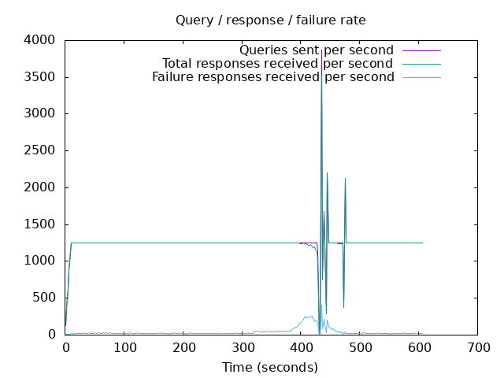
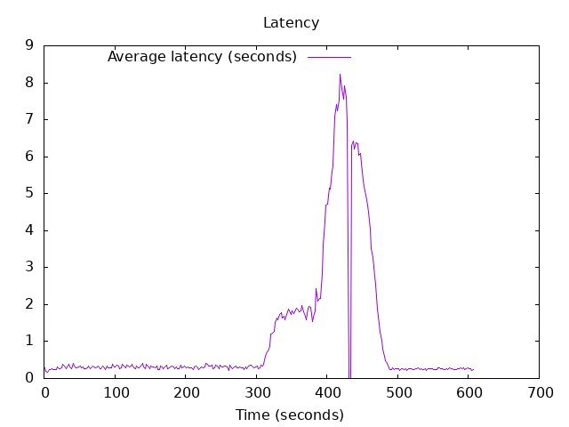

DNS Resolution Performance Testing Tool Version 2.14.0 [Status] Command line: resperf -P 20250620-1144.gnuplot -M doh -s 79.127.218.224 -O doh-uri=https://protective.joindns4.eu/dns-query -d domains_shuffled.list -C 50 -m 1250 -b 1400 -q 1000000 -R -r 10 -c 600 -t 30 -F 0 -i 2 [Status] Sending [Status] Ramp-up done, sending constant traffic Warning: received a response with an unexpected id: 9456 Warning: received a response with an unexpected id: 9477 Warning: received a response with an unexpected id: 9460 Warning: received a response with an unexpected id: 9458 Warning: received a response with an unexpected id: 9457 Warning: received a response with an unexpected id: 9474 Warning: received a response with an unexpected id: 9839 Warning: received a response with an unexpected id: 9829 Warning: received a response with an unexpected id: 9841 Warning: received a response with an unexpected id: 9860 Warning: received a response with an unexpected id: 9830 Warning: received a response with an unexpected id: 9847 Warning: received a response with an unexpected id: 9855 Warning: nghttp2_session_send failed: The user callback function failed Warning: nghttp2_session_send failed: The user callback function failed Warning: received a response with an unexpected id: 10157 Warning: received a response with an unexpected id: 10178 Warning: received a response with an unexpected id: 10180 Warning: received a response with an unexpected id: 10158 Warning: received a response with an unexpected id: 10168 Warning: received a response with an unexpected id: 10167 Warning: received a response with an unexpected id: 10239 Warning: received a response with an unexpected id: 10200 [Status] Waiting for more responses [Status] Testing complete Statistics: Queries sent: 756249 Queries completed: 753889 Queries lost: 2360 Response codes: NOERROR 501398 (66.51%), SERVFAIL 25481 (3.38%), NXDOMAIN 227010 (30.11%) Run time (s): 622.433316 Maximum throughput: 3523.500000 qps Lost at that point: 9.08% Connection attempts: 74 (74 successful, 100.00%) DNS-over-HTTPS statistics: HTTP/2 return codes: 200: 753910
 